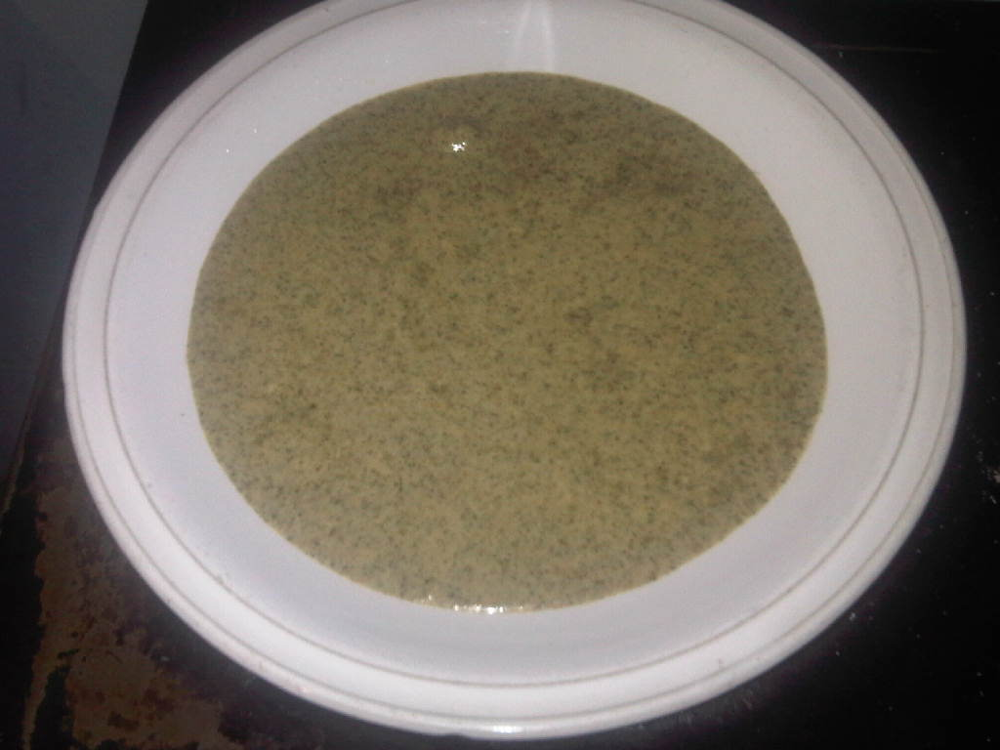

Mundyoli

Description
Mundyoli is a vegetable found in the southern part of Zambia. It is eaten by the Tonga people. Mundyoli is made out of pumpkin leaves.
Fresh pumpkin leaves are pounded and then rolled into small balls like the size of a golf ball.They are dried in the sun for close to one month.
Ingredients
- 1/2 ball of mundyoli
- 1kg unshelled groundnuts.
- 1 litre water and salt to taste.
- No tomatoes should be added.
Steps
- Pound the ground nuts as well mundyoli and sieve.
- Mix them in a bowl.
- Put water on the fire and allow to boil.
- Put mundyoli and the groundnuts in a medium jar.
- Add cold water and make a thick paste.
- Add the paste to the boiling water and stir.
- Stir every after 5 minutes.
- Cook for 25 minutes and make sure the mundyoli is cooked.
- Add a pinch of salt to taste.
- Serve with nshima.
Home